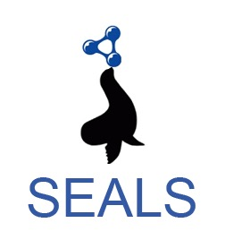

The main aim of this track is to motivate and attract ontology matching systems to work on matching ontologies used in the biodiversity and ecology domains. To this end, we consider common ontologies or vocabularies used in several biodiversity applications. In 2018 and 2019, this track consisted on finding alignments between the Environment Ontology (ENVO) and the Semantic Web for Earth and Environment Technology Ontology (SWEET), and between the Flora Phenotype Ontology (FLOPO) and the Plant Trait Ontology (TO). In 2020, we partnered with the AgroPortal project to include two new matching tasks involving important thesaurus (originaly developed in SKOS) in agronomy and environmental sciences: finding alignments between the AGROVOC thesaurus and US National Agricultural Library Thesaurus (NALT) and between the GEneral Multilingual Environmental Thesaurus (GEMET) and the Analysis and Experimentation on Ecosystems thesaurus (ANAEETHES).
These ontologies and thesauri are particularly useful for biodiversity and ecology research and are being used in various projects. They have been developed in parallel and are significantly overlapping. They are semantically rich and contain tens of thousands of classes. By providing semantic resources developped in SKOS, our objective is also to encourage the ontology alignment community to develop tools that can natively handle SKOS which is important standard to encode terminologies (particulary thesauri and taxonomies) and for which alignment is also very important.
The biodiv dataset (4 ontologies, 4 thesauri and 4 reference alignments) can be dowlowded here.
A source code, as well as a jar file, for the transformation of SKOS thesauri into OWL ontologies, can be used by matching systems and can be found under the following link. We do however recommend developers of ontology matching systems to implement their own code to handle natively SKOS thesauri.
You can either download and try it on your own or directly use SEALS platform. Both options are possible, however finally you have to wrap your tool against the SEALS client provided via the OAEI main page .
Some mappings in the reference alignments have been extracted from the ontology and thesauri source files publicly available. We therefore ask the competitors to use only the source files provided in the dataset archive and ignore the original source files (available on AgroPortal or anywhere else) in the alignement process (including as background knowledge).
We would like to thank Marco Schmidt and Claus Weiland (FLOPO) who provided us with manual mappings between the FLOPO and PTO ontologies. As well as Melanie Buss (PANGAEA) who provided us with manual mappings between the ENVO and SWEET ontologies.
We would like to thank Daniel Faria, who provided us with the code for the transformation of SKOS thesauri into OWL ontologies.
We would like to thank FAO AIMS and US NAL as well as the GACS project for providing mappings betweem AGROVOC and NALT.
We would like to thank Christian Pichot and the ANAEE France project for providing mappings betweem ANAEETHES and GEMET.
The track is supported in part by the AquaDiva project and the D2KAB project.
[1] Naouel Karam, Abderrahmane Khiat, Alsayed Algergawy, Melanie Sattler, Claus Weiland, Marco Schmidt: Matching biodiversity and ecology ontologies: challenges and evaluation results. Knowledge Eng. Review 35: e9 (2020).
[2] Alsayed Algergawy, Naouel Karam, Friederike Klan, Clement Jonquet: Proceedings of the 2nd International Workshop on Semantics for Biodiversity co-located with 16th International Semantic Web Conference (ISWC 2017), Vienna, Austria, October 22nd, 2017. CEUR Workshop Proceedings 1933, CEUR-WS.org 2017
[3] A description of how the reference alignement has been produced for AGROVOC-NALT and ANAEETHES-GEMET will be provided.